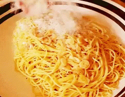

bolognese.com
bolognese.comThe origins of the Bolognese ragù are related to those of the French ragoût, a stew of ingredients reduced to small pieces, which became popular in the 18th century.
The earliest documented recipe for a ragù served with pasta comes from late 18th century Imola, near Bologna, from Alberto Alvisi, cook of the local Cardinal Barnaba Chiaramonti, later Pope Pius VII.
In 1891 Pellegrino Artusi published a recipe for a ragù characterized as bolognese in his cookbook. Artusi's recipe, which he called Maccheroni alla bolognese, is thought to derive from the mid 19th century when he spent considerable time in Bologna (maccheroni being a generic term for pasta, both dried and fresh). The sauce called for predominantly lean veal filet along with pancetta, butter, onion, and carrot. The meats and vegetables were to be finely minced, cooked with butter until the meats browned, then covered and cooked with broth. No tomato sauce was foreseen. Artusi commented that the taste could be made even more pleasant by adding small pieces of dried mushroom, a few slices of truffle, or chicken liver cooked with the meat and diced. As a final touch, he also suggested adding half a glass of cream to the sauce when it was completely done to make it taste even smoother. Artusi recommended serving this sauce with a medium size pasta ("horse teeth") made from durum wheat. The pasta was to be made fresh, cooked until it was firm, and then flavored with the sauce and Parmigiano cheese.
Since Artusi recorded and subsequently published his recipe for Maccheroni alla bolognese, what is now ragù alla bolognese has evolved with the cuisine of the region. Most notable is the preferred choice of pasta, which today is widely recognized as fresh tagliatelle. Another reflection of the evolution of the cuisine since its inception, is the addition of tomato, either as a puree or as a concentrated paste , to the common mix of ingredients. Similarly, both wine and milk appear today in the list of ingredients in many of the contemporary recipes, and beef has mostly displaced veal as the dominant meat.
In 1982, the Italian Academy of Cuisine (Accademia Italiana della Cucina), an organization dedicated to preserving the culinary heritage of Italy, recorded and deposited a recipe for "classic Bolognese ragù" with the Bologna Chamber of Commerce (La Camera di Commercio di Bologna). A version of the academy's recipe for American kitchens was also published. The academy's recipe confines the ingredients to beef cut from the plate section (cartella di manzo), fresh unsmoked pancetta (pancetta di maiale distesa), onions, carrot, celery, passata (or tomato purée), meat broth, dry white wine, milk, salt and pepper.
Nowadays, there are many variations of the recipe even among native Italian chefs, and the repertoire has been further broadened by some American chefs known for their expertise in Italian cuisine.
Ragù alla bolognese is a complex sauce which involves various cooking techniques, including sweating sautéing and braising. As such, it lends itself well to interpretation and adaptation by professional chefs and home cooks alike. Common sources of differences include which meats to use (beef, pork or veal) and their relative quantities, the possible inclusion of either cured meats or offal, which fats are used in the sauté phases (rendered pork fat, butter, olive or vegetable oil), what form of tomato is employed (fresh, canned or paste), the makeup of the cooking liquids (wine, milk, tomato juices, or broth) and their specific sequence of addition.
and braising. As such, it lends itself well to interpretation and adaptation by professional chefs and home cooks alike. Common sources of differences include which meats to use (beef, pork or veal) and their relative quantities, the possible inclusion of either cured meats or offal, which fats are used in the sauté phases (rendered pork fat, butter, olive or vegetable oil), what form of tomato is employed (fresh, canned or paste), the makeup of the cooking liquids (wine, milk, tomato juices, or broth) and their specific sequence of addition.
The numerous variations among recipes for ragù alla bolognese have led many to search for the definitive, authentic recipe. Some have suggested the recipe registered by the Accademia Italiana della Cucina in 1982 as the "most authentic".
The many variations tend to be based on a common theme. For instance, garlic is absent from all of the recipes mentioned above, as are herbs other than the parsimonious use of bay leaves by some. Seasoning is limited to salt, pepper and the occasional pinch of nutmeg. In all of the recipes, meats dominate as the principal ingredient, while tomatoes, in one form or another, are only an auxiliary ingredient.